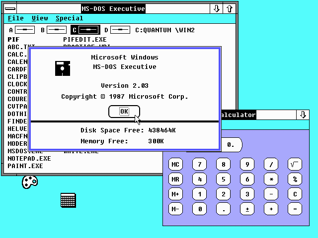

Created in 1984 for MS-DOS, Windows 1.0 was the first and most primitive version of Windows;
Being used as a Shell for MS-DOS and not having many native applications at the time, it
did struggle to sell well and was often viewed to much of a power hog and more clunky then
MS-DOS's Command Line. Coming bundled with some applications to demonstrate the usage
of the mouse as well as the many graphical color capabilities that the OS could do.
Windows 2.0 Picking Up Steam...

Released in the Winter of 1987; It added some capabilities that 1.0 lacked. Adding VGA Color support, better multitasking with the ability to minimize and maximize windows, and other smaller tweaks to the OS shell.
Windows reputation was gaining as the leading GUI giant the Macintosh, started to lose its own user base and businesses began adopting the PC into the workspace.
While it wasn't as notable as its successor (Windows 3.0), it was a step in the right direction for Microsoft and showed off positive direction within the development.